Raised in one of Demacia’s lesser quarters, Sylas of Dregbourne has come to symbolize the darker side of the Great City. As a boy, his ability to root out hidden sorcery caught the attention of the notorious mageseekers, who eventually imprisoned him for turning those same powers against them. Having now broken free, Sylas lives as a hardened revolutionary, using the magic of those around him to destroy the kingdom he once served.
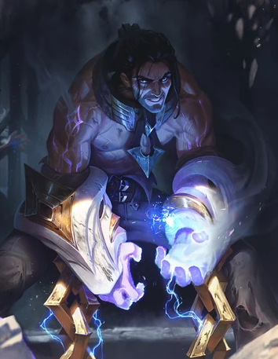Jericho Swain is the visionary ruler of Noxus, an expansionist nation that reveres only strength. Though he was cast down and crippled in the Ionian wars, his left arm severed, he seized control of the empire with ruthless determination… and a new, demonic hand. Now, Swain commands from the front lines, marching against a coming darkness that only he can see—in glimpses gathered by shadowy ravens from the corpses all around him. In a swirl of sacrifice and secrets, the greatest secret of all is that the true enemy lies within.
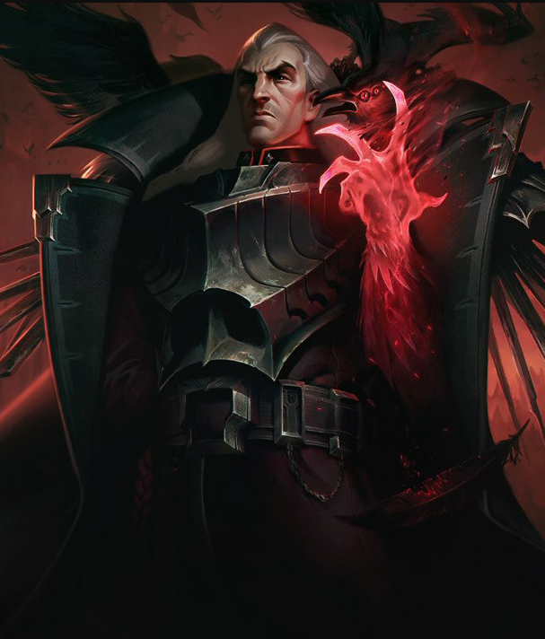Ornn is the Freljordian demi-god of forging and craftsmanship. He works in the solitude of a massive smithy, hammered out from the lava caverns beneath the volcano Hearth-Home. There he stokes bubbling cauldrons of molten rock to purify ores and fashion items of unsurpassed quality. When other deities walk the earth and meddle in mortal affairs, Ornn arises to put these impetuous beings back in their place, either with his trusty hammer or the fiery power of the mountains themselves.
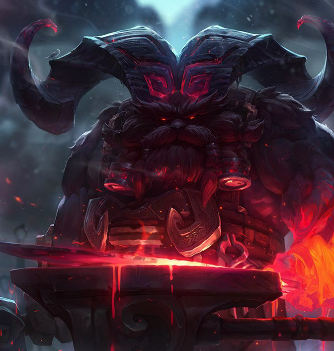Something has awoken in Runeterra. Something ancient. Something terrible. The ageless horror known as Fiddlesticks stalks the edges of mortal society, drawn to areas thick with paranoia where it feeds upon terrorized victims. Wielding a jagged scythe, the haggard, makeshift creature reaps fear itself, shattering the minds of those unlucky enough to survive in its wake. Beware the sounding of the crow, or the whispering of the shape that appears almost human… Fiddlesticks has returned.
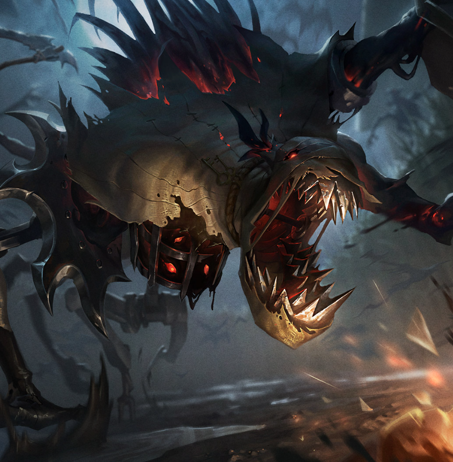Separate, but never parted, Kindred represents the twin essences of death. Lamb's bow offers a swift release from the mortal realm for those who accept their fate. Wolf hunts down those who run from their end, delivering violent finality within his crushing jaws. Though interpretations of Kindred's nature vary across Runeterra, every mortal must choose the true face of their death.
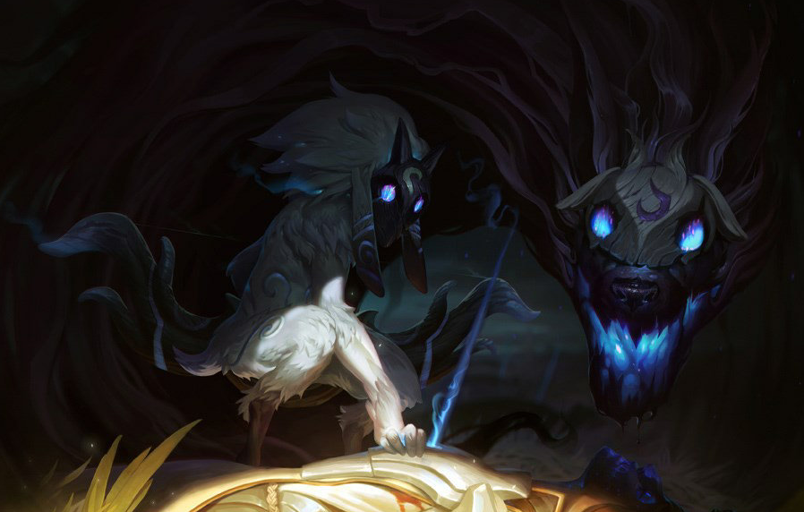A traveler from beyond the stars, Bard is an agent of serendipity who fights to maintain a balance where life can endure the indifference of chaos. Many Runeterrans sing songs that ponder his extraordinary nature, yet they all agree that the cosmic vagabond is drawn to artifacts of great magical power. Surrounded by a jubilant choir of helpful spirit meeps, it is impossible to mistake his actions as malevolent, as Bard always serves the greater good... in his own odd way.
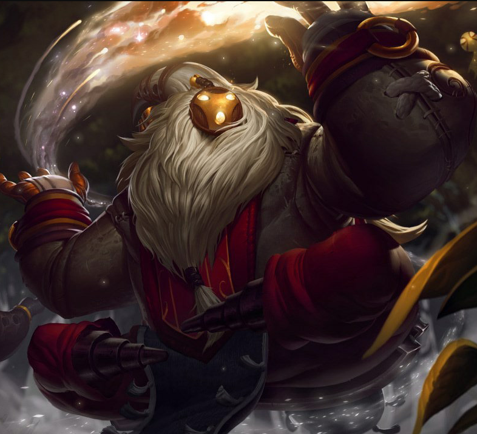Aurelion Sol once graced the vast emptiness of the cosmos with celestial wonders of his own devising. Now, he is forced to wield his awesome power at the behest of a space-faring empire that tricked him into servitude. Desiring a return to his star-forging ways, Aurelion Sol will drag the very stars from the sky, if he must, in order to regain his freedom.
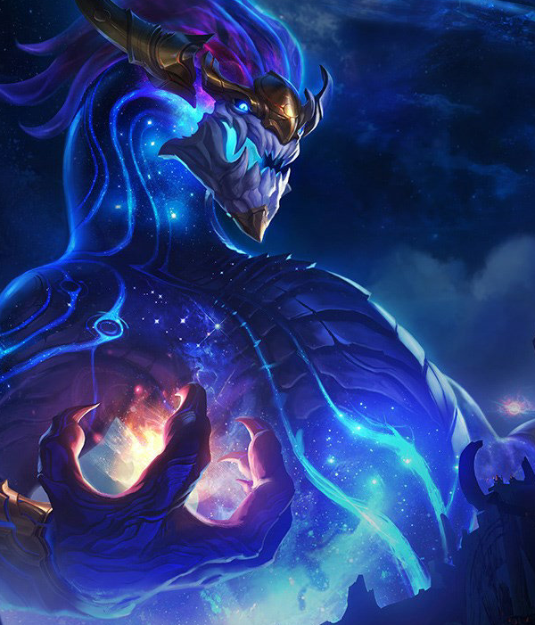To those who still revere him, the Volibear is the storm made manifest. Destructive, wild, and stubbornly resolute, he existed before mortals walked the Freljord's tundra, and is fiercely protective of the lands that he and his demi-god kin created. Cultivating a deep hatred of civilization and the weakness it brought with it, he now fights to return to the old ways—when the land was untamed, and blood spilled freely—and eagerly battles all who oppose him, with tooth, claw, and thundering domination.
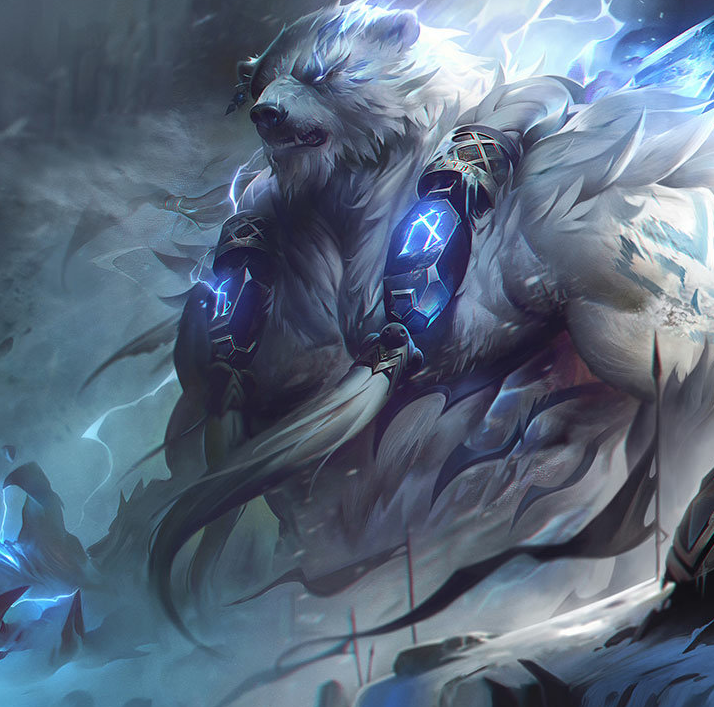Twice slain and thrice born, Mordekaiser is a brutal warlord from a foregone epoch who uses his necromantic sorcery to bind souls into an eternity of servitude. Few now remain who remember his earlier conquests, or know the true extent of his powers—but there are some ancient souls that do, and they fear the day when he may return to claim dominion over both the living and the dead.
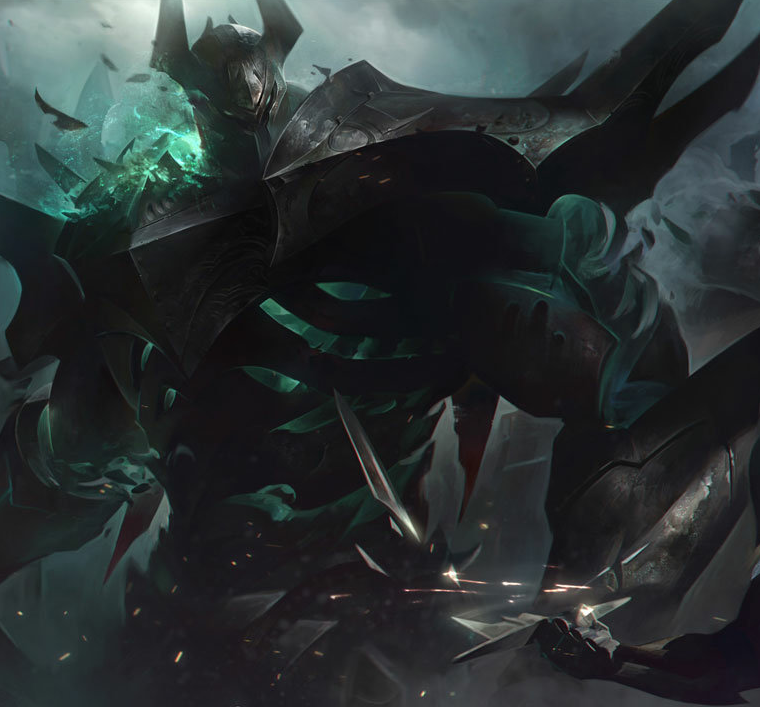Once an unwilling host to the Aspect of War, Atreus survived when the celestial power within him was slain, refusing to succumb to a blow that tore stars from the heavens. In time, he learned to embrace the power of his own mortality, and the stubborn resilience that goes along with it. Atreus now opposes the divine as Pantheon reborn, his unbreakable will fueling the fallen Aspect's weapons on the field of battle.
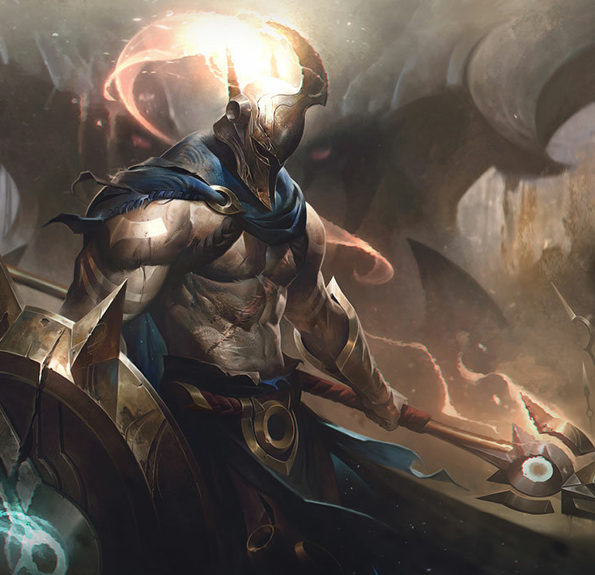Unmatched in both his skill with unique armaments and his biting sarcasm, Jax is the last known weapons master of Icathia. After his homeland was laid low by its own hubris in unleashing the Void, Jax and his kind vowed to protect what little remained. As magic now rises in the world, this slumbering threat stirs once more, and Jax roams Valoran, wielding the last light of Icathia and testing all warriors he meets to see if any are strong enough to stand beside him...
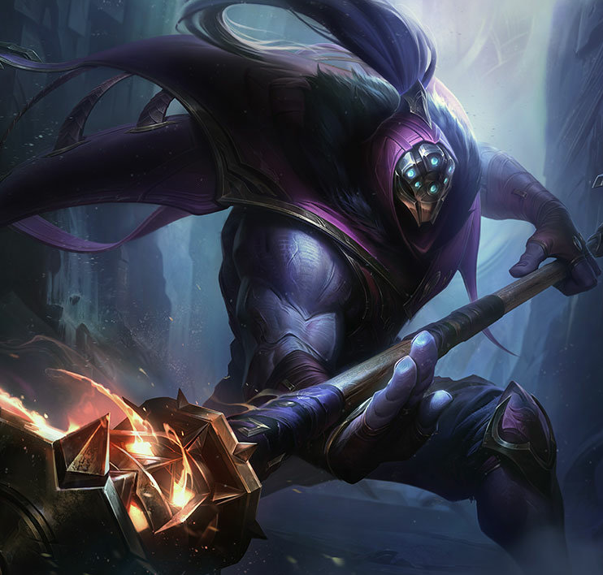A prodigy from the rough streets of Zaun, Ekko manipulates time to twist any situation to his advantage. Using his own invention, the Zero Drive, he explores the branching possibilities of reality to craft the perfect moment. Though he revels in this freedom, when there's a threat to his friends he'll do anything to defend them. To outsiders, Ekko seems to achieve the impossible the first time, every time.
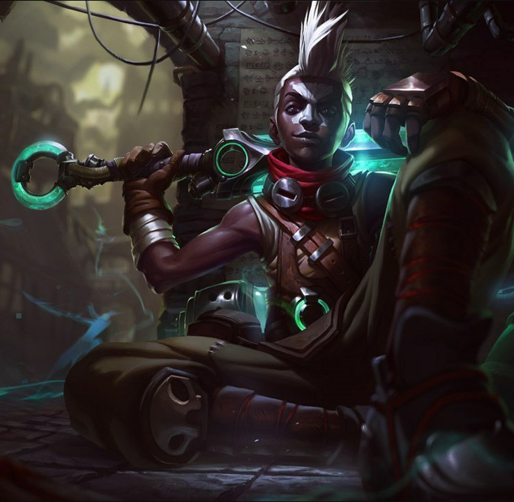